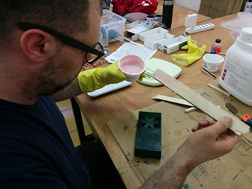

Exercise 09 - Molding and casting
Assignment
Design a 3D mold, machine it, and cast parts from it
Task
For this exercise I decide to mold and cast something small. I want create a personalized keyring having a shape of an asterisk (it is the small tattoo of my girlfriend and at the same time is the case of the smart object to my final project). I draw the 3D model of the asterisk placing a thorus in order to create a central ring. I create a .STL file I prepared the file for milling the mold using Carve. To milling the mold (using carving wax, a modeling wax produced by Du-Matt corporation). I used a couple of mills: an end mill for the first phase a bull nose for the final finishing.
Molding and casting
I started to prepare the molding and casting phase. I used Smooth-Sil 940 mixing the two components with the following ratio: 100 part A and 10 part B (http://www.smooth-on.com/a25/Smooth-Sil%3D-940-Suitable-For-Food-Related-Applications/article_info.html). I mix the 2 components for 3 minutes. I used an improvised vacuum machine (hacking an IKEA box) to eliminate air bubbles. I have prepared the material for the casting so I cast material in the mold starting from a corner after putting a liquid to facilitate the detachment. Cure time is 24 hours. The day after i check the new mold and there are no bubbles. At the end of the process i used the mold to cast chocolate.
